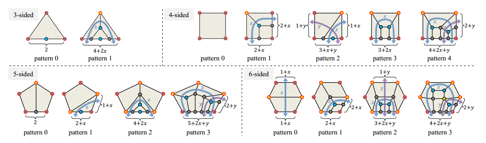

操作
頂点へのスナップ
エッジフロー境界を描画しているときに、Ctrl キーを押したままにして頂点にスナップします。
パスへのスナップ
エッジフロー境界を描画しているときに、Ctrl キーと Shift キーを押したままにしてパスにスナップします。
サーフェスへのスナップ
S キーを押すと、オブジェクトの表面にスナップするかどうかが切り替わります。
背面へのスナップを有効にする
法線方向と反対のサーフェスにスナップするかどうかを切り替えるには、V キーを押します。
対称軸を描く
M キーを押すと、yz 平面に描画するかどうかが切り替わります。エッジフロー境界を描画した後、このオプションは自動的に無効に設定され、Ctrl + M を押すと有効のままになります。
セグメント番号の変更
エッジフロー境界にマウスを移動すると、Ctrl キーを押しながらマウス ホイールを押すとセグメントを変更できます。
パターンの切り替え
ループにカーソルを合わせると、T キーを押してパターン制約を変更し、特定のパターンを取得できます。
B キーを押すと、解のない図形をスキップするかどうかを切り替えます。このオプションを有効にすると、切り替え時に解のない図形は自動的にスキップされます。
ソルバー制約の変更（パディングと追加エッジフロー）
ループにマウスを置いたときに、Shift キーを押しながらマウスホイールを押すと、境界のパディングを変更できます。
追加のエッジ フローの数を減らすには Ctrl + x、y、z を使用し、追加のエッジ フローの数を増やすには Shift + x、y、z を使用します。
パターンの回転を変更する
ループにカーソルを合わせると、R キーを押してソルバーに回転制約を追加できます。
ソルバーの提案
制約で解決できない場合は、実行可能なソリューションを得るための変更セグメントの提案が表示されます。この提案はソルバーによって推測されるものであり、唯一のソリューションではなく、ソリューションの 1 つです。
スムージングメッシュ
生成されたメッシュを含むループにカーソルを合わせると、Shift + 1 2 3 を押すと、3 つのアルゴリズムでメッシュが滑らかになります。
最後の 3 つ目は法線方向によるスムージングです。これは滑らかな表面へのパッチに役立ちます。
Fix Normal
When you hovering a Loop with a generated mesh, press i to let the faces normal toward you.
利用可能なパッチパターン
これはパターン形状のパッチです。一般的に、パターン 0 が最もきれいです。他のパターンはエッジの数による妥協です。最もきれいなトポロジ形状を得るには、パターン 0 を選択します。
